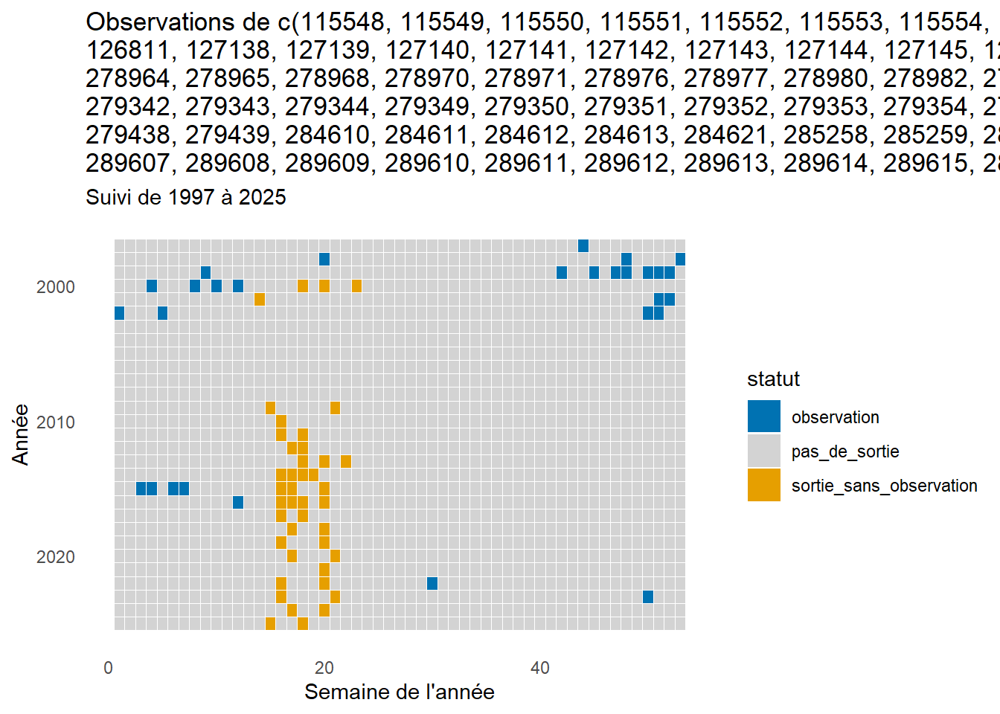
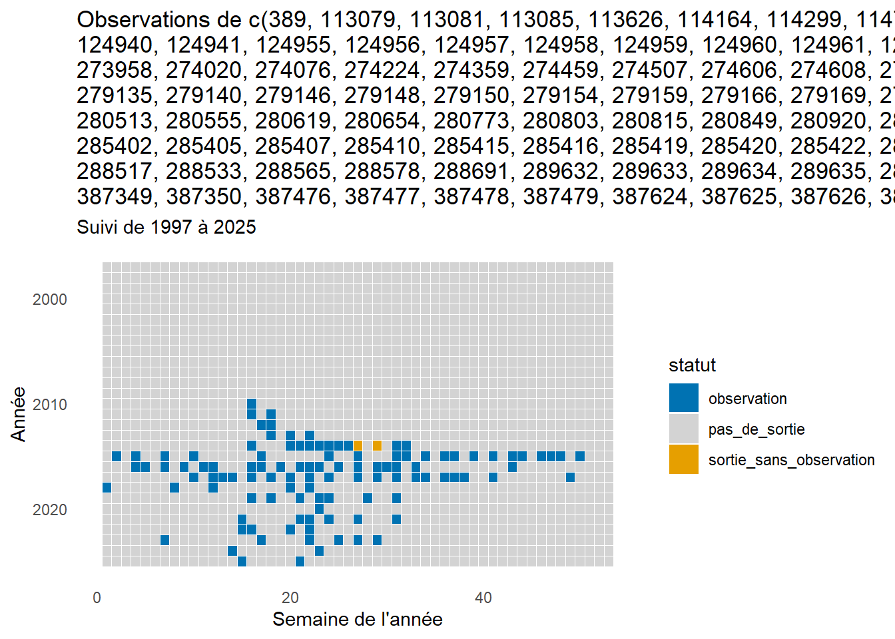
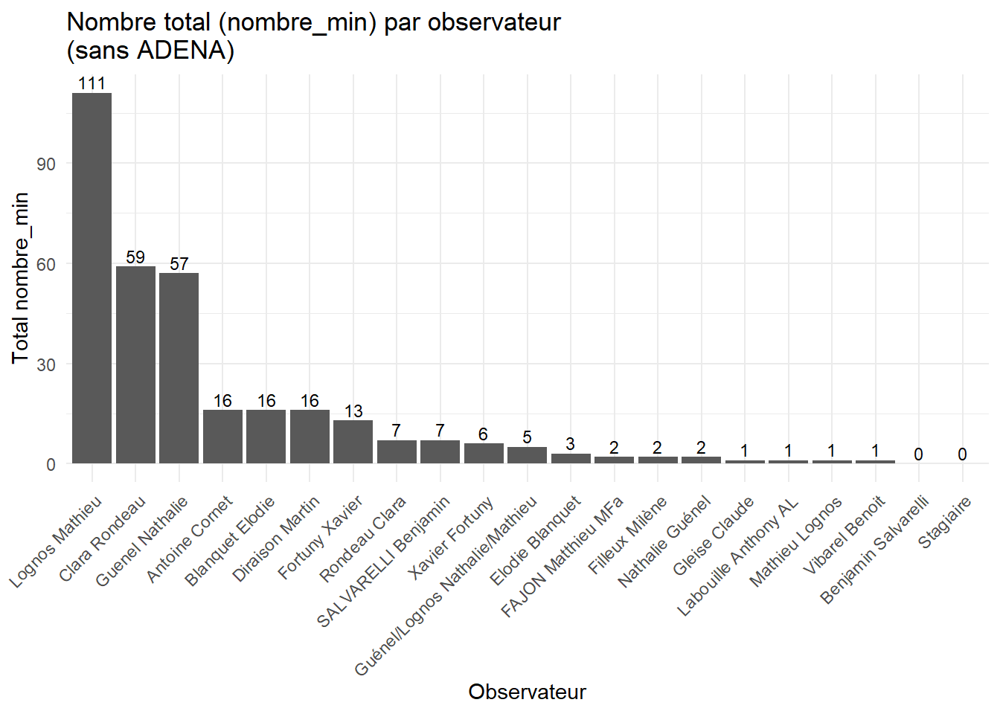
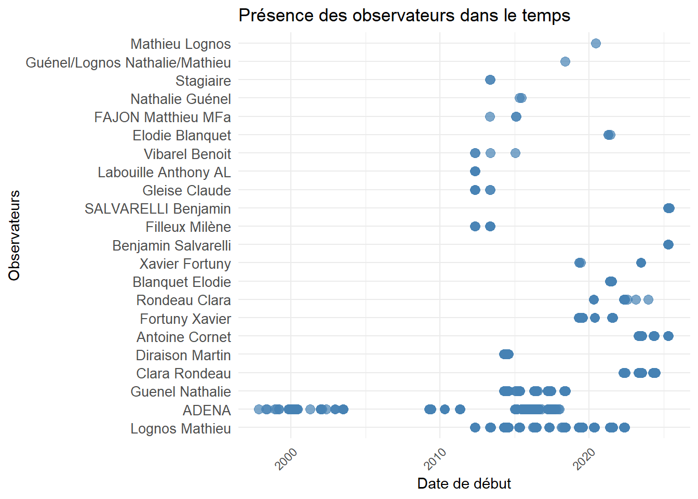

#| label: Packages necessaire
library(tidyverse)
library(lubridate)
library(readxl)
library(ggplot2)
library(dplyr)
library(gridExtra)
library(readr)
library(knitr)Analyses_exploratoires
Attention
Pour les analyses à venir, vous devez utiliser le nouveau jeu de données créé après vérification qu’il est complet et nettoyé (voir les sections suivantes).
Il est important de commencer toutes les nouvelles analyses avec ce jeu de données afin que tout le monde travaille sur la même base. Le jeu de donnée se trouve dans le git commun dans le dossier data pro
Si vous avez besoin de sous-jeux de données, par exemple uniquement le Butor étoilé ou uniquement les données opportunistes, rendez-vous dans la section 4 pour les récupérer, afin de préserver la typologie correcte du jeu de données.
1. Jeux de données nécessaires ( par especes, par protocole….)
process_data <- read_csv("data/pro/process_data.csv")## 4.1 Par especes
Butor_etoile<-process_data %>% filter( nom_vernaculaire == "Butor étoilé")
Blongios_nain<-process_data %>% filter( nom_vernaculaire == "Blongios nain, Butor blongios")
Taleve_sultane<-process_data %>% filter( nom_vernaculaire == "Talève sultane, Poule sultane, Porphyrion bleu")1.2 Par protocole
suivi<-process_data %>%
filter(
champs_additionnels%in% c(
"{'RELV_NOM': 'SuiviBlongiostaleve'}",
"{'RELV_NOM': 'SuiviButor'}"
)
)
opportuniste <- process_data %>%
filter(
!champs_additionnels %in% c(
"{'RELV_NOM': 'SuiviBlongiostaleve'}",
"{'RELV_NOM': 'SuiviButor'}"
)
)
Protocole_SuiviButor <- process_data %>%
filter(
champs_additionnels == "{'RELV_NOM': 'SuiviButor'}" &
nom_vernaculaire == "Butor étoilé"
)
Protocole_SuiviBlongiosTaleve <- process_data %>%
filter(
champs_additionnels == "{'RELV_NOM': 'SuiviBlongiosTalève'}" &
nom_vernaculaire %in% c(
"Blongios nain, Butor blongios",
"Talève sultane, Poule sultane, Porphyrion bleu"
)
)
Opportuniste_Butor <- process_data %>%
filter(
!champs_additionnels == "{'RELV_NOM': 'SuiviButor'}" &
nom_vernaculaire == "Butor étoilé"
)
Opportuniste_Blongios<- process_data %>%
filter(
!champs_additionnels == "{'RELV_NOM': 'SuiviBlongiostaleve'}" &
nom_vernaculaire == "Blongios nain, Butor blongios"
)
Opportuniste_Taleve<- process_data %>%
filter(
!champs_additionnels == "{'RELV_NOM': 'SuiviBlongiostaleve'}" &
nom_vernaculaire == "Talève sultane, Poule sultane, Porphyrion bleu"
)2. Analyses exploratoires
2.1continuité des protocoles sur les sites
2.1.a Pour le Butor

2.1.b Pour le Blongios et le Taleve

Interpretation
Sites où pas de protocole suivi régulièrement (1 à 2 sorties en tout) :
blongios/taleve : petit_bassin R3.2 petit_bassin R2.9 petit_bassin R3.1 GB6 chemin_animation
butor : GB GB5 s 66 44 55 11 99 33 domaineGrandClavalet
sites avec protocole régulier : - blongios/taleve : début en 2014 - butor : début en 2013
2.2 effort d’observation journalier
2.2.a Effort journalier toutes espèces tout protocole
process_data <- process_data %>%
mutate(
heure_debut = as.POSIXct(heure_debut, format = "%d/%m/%Y %H:%M:%S"),
heure_debut_tronc = hour(heure_debut),
date = as.Date(heure_debut)
)
### Sommer les obs par heure
obs_heure <- process_data %>%
group_by(heure_debut_tronc) %>%
summarize(sum(nombre_min))
obs_heure# A tibble: 19 × 2
heure_debut_tronc `sum(nombre_min)`
<int> <dbl>
1 0 2445
2 3 0
3 4 1
4 5 29
5 6 75
6 7 51
7 8 195
8 9 38
9 10 14
10 11 23
11 12 2
12 15 5
13 16 1
14 17 3
15 18 0
16 19 6
17 20 74
18 21 53
19 22 1### Frequence horaire
freq_heure <- process_data %>% group_by(heure_debut_tronc) %>% summarise(freq = n()) %>% mutate(freq_rel = freq / sum(freq))
### Barplot
ggplot(mapping = aes(x, y)) +
geom_bar(data = data.frame(x = freq_heure$heure_debut_tronc, y = freq_heure$freq), width = 0.8, stat = 'identity') +
geom_bar(data = data.frame(x = freq_heure$heure_debut_tronc, y = obs_heure$`sum(nombre_min)`), width = 0.4, stat = 'identity', fill = 'black') +
theme_classic() + scale_y_continuous(expand = c(0, 0)) + xlab("Heure de la journée tronquée à l'inférieur") + ylab ("Nombre de prospections (en gris) et d'observations (en noir)" ) +
ggtitle("Effort d'échantillonnage et nombre d'observations par heure \nen conservant les heures inconnues (0), tout protocole confondu")
2.2.b Données d’heure sans les 00:00:00 et les absence d’heure tout espece tout protocole
process_data <-process_data %>%
filter(format(heure_debut, "%H:%M:%S") != "00:00:00")
### Extraire l'heure
process_data <- process_data %>%
mutate(
heure_debut_tronc = hour(heure_debut), # heure de la journée (0-23)
date = as.Date(heure_debut)
)
process_data$heure_debut_tronc = as.factor(process_data$heure_debut_tronc)
### Sommer les obs par heure
obs_heure <- process_data %>%
group_by(heure_debut_tronc) %>%
summarize(sum(nombre_min))
obs_heure# A tibble: 18 × 2
heure_debut_tronc `sum(nombre_min)`
<fct> <dbl>
1 3 0
2 4 1
3 5 29
4 6 75
5 7 51
6 8 195
7 9 38
8 10 14
9 11 23
10 12 2
11 15 5
12 16 1
13 17 3
14 18 0
15 19 6
16 20 74
17 21 53
18 22 1### Frequence horaire
freq_heure <- process_data %>% group_by(heure_debut_tronc) %>% summarise(freq = n()) %>% mutate(freq_rel = freq / sum(freq))
### Barplot
ggplot(mapping = aes(x, y)) +
geom_bar(data = data.frame(x = freq_heure$heure_debut_tronc, y = freq_heure$freq), width = 0.8, stat = 'identity') +
geom_bar(data = data.frame(x = freq_heure$heure_debut_tronc, y = obs_heure$`sum(nombre_min)`), width = 0.4, stat = 'identity', fill = 'black') +
theme_classic() + scale_y_continuous(expand = c(0, 0)) + xlab("Heure de la journée tronquée à l'inférieur") + ylab ("Nombre de prospections (en gris) et d'observations (en noir)" ) +
ggtitle("Effort d'échantillonnage et nombre d'observations par heure \nsans les heures inconnues, tout protocole confondu")
2.2.c Effort journalier Butor tout protocole
Butor_etoile <- Butor_etoile %>%
mutate(heure_debut = as.POSIXct(heure_debut, format = "%d/%m/%Y %H:%M:%S")) %>%
filter(format(heure_debut, "%H:%M:%S") != "00:00:00")
### Extraire l'heure
Butor_etoile <- Butor_etoile %>%
mutate(
heure_debut_tronc = hour(heure_debut), # heure de la journée (0-23)
date = as.Date(heure_debut)
)
Butor_etoile$heure_debut_tronc = as.factor(Butor_etoile$heure_debut_tronc)
### Sommer les obs par heure
obs_heure <- Butor_etoile %>%
group_by(heure_debut_tronc) %>%
summarize(sum(nombre_min))
obs_heure# A tibble: 17 × 2
heure_debut_tronc `sum(nombre_min)`
<fct> <dbl>
1 3 0
2 4 0
3 5 0
4 6 0
5 8 3
6 9 7
7 10 7
8 11 18
9 12 2
10 15 4
11 16 1
12 17 3
13 18 0
14 19 1
15 20 0
16 21 0
17 22 0### Frequence horaire
freq_heure <- Butor_etoile %>% group_by(heure_debut_tronc) %>% summarise(freq = n()) %>% mutate(freq_rel = freq / sum(freq))
### Barplot
ggplot(mapping = aes(x, y)) +
geom_bar(data = data.frame(x = freq_heure$heure_debut_tronc, y = freq_heure$freq), width = 0.8, stat = 'identity') +
geom_bar(data = data.frame(x = freq_heure$heure_debut_tronc, y = obs_heure$`sum(nombre_min)`), width = 0.4, stat = 'identity', fill = 'black') +
theme_classic() + scale_y_continuous(expand = c(0, 0)) + xlab("Heure de la journée tronquée à l'inférieur") + ylab ("Nombre de prospections (en gris) et d'observations (en noir)" ) +
ggtitle("Effort d'échantillonnage et nombre d'observations (Butor étoilé) par heure \nsans les heures inconnues, tout protocole confondu")
2.2.d Effort journalier Blongios tout protocole
Blongios_nain <- Blongios_nain %>%
mutate(heure_debut = as.POSIXct(heure_debut, format = "%d/%m/%Y %H:%M:%S")) %>%
filter(format(heure_debut, "%H:%M:%S") != "00:00:00")
### Extraire l'heure
Blongios_nain <- Blongios_nain %>%
mutate(
heure_debut_tronc = hour(heure_debut), # heure de la journée (0-23)
date = as.Date(heure_debut)
)
Blongios_nain$heure_debut_tronc = as.factor(Blongios_nain$heure_debut_tronc)
### Sommer les obs par heure
obs_heure <- Blongios_nain %>%
group_by(heure_debut_tronc) %>%
summarize(sum(nombre_min))
obs_heure# A tibble: 13 × 2
heure_debut_tronc `sum(nombre_min)`
<fct> <dbl>
1 4 0
2 5 1
3 6 14
4 7 5
5 8 12
6 9 2
7 10 4
8 11 1
9 15 1
10 19 2
11 20 16
12 21 23
13 22 1### Frequence horaire
freq_heure <- Blongios_nain %>%
group_by(heure_debut_tronc) %>%
summarise(freq = n()) %>%
mutate(freq_rel = freq / sum(freq))
### Barplot
ggplot(mapping = aes(x, y)) +
geom_bar(data = data.frame(x = freq_heure$heure_debut_tronc, y = freq_heure$freq), width = 0.8, stat = 'identity') +
geom_bar(data = data.frame(x = freq_heure$heure_debut_tronc, y = obs_heure$`sum(nombre_min)`), width = 0.4, stat = 'identity', fill = 'black') +
theme_classic() + scale_y_continuous(expand = c(0, 0)) + xlab("Heure de la journée tronquée à l'inférieur") + ylab ("Nombre de prospections (en gris) et d'observations (en noir)" ) +
ggtitle("Effort d'échantillonnage et nombre d'observations (Blongios nain) par heure \nsans les heures inconnues, tout protocole confondu")
2.2.e Effort journalier Taleve tout protocole
Taleve_sultane <- Taleve_sultane %>%
mutate(heure_debut = as.POSIXct(heure_debut, format = "%d/%m/%Y %H:%M:%S")) %>%
filter(format(heure_debut, "%H:%M:%S") != "00:00:00")
### Extraire l'heure
Taleve_sultane <- Taleve_sultane %>%
mutate(
heure_debut_tronc = hour(heure_debut), # heure de la journée (0-23)
date = as.Date(heure_debut)
)
Taleve_sultane$heure_debut_tronc = as.factor(Taleve_sultane$heure_debut_tronc)
### Sommer les obs par heure
obs_heure <- Taleve_sultane %>%
group_by(heure_debut_tronc) %>%
summarize(sum(nombre_min))
obs_heure# A tibble: 11 × 2
heure_debut_tronc `sum(nombre_min)`
<fct> <dbl>
1 4 1
2 5 28
3 6 61
4 7 46
5 8 180
6 9 29
7 10 3
8 11 4
9 19 3
10 20 58
11 21 30### Frequence horaire
freq_heure <- Taleve_sultane %>%
group_by(heure_debut_tronc) %>%
summarise(freq = n()) %>%
mutate(freq_rel = freq / sum(freq))
### Barplot
ggplot(mapping = aes(x, y)) +
geom_bar(data = data.frame(x = freq_heure$heure_debut_tronc, y = freq_heure$freq), width = 0.8, stat = 'identity') +
geom_bar(data = data.frame(x = freq_heure$heure_debut_tronc, y = obs_heure$`sum(nombre_min)`), width = 0.4, stat = 'identity', fill = 'black') +
theme_classic() + scale_y_continuous(expand = c(0, 0)) + xlab("Heure de la journée tronquée à l'inférieur") + ylab ("Nombre de prospections (en gris) et d'observations (en noir)" ) +
ggtitle("Effort d'échantillonnage et nombre d'observations (Talève sultane) par heure \nsans les heures inconnues, tout protocole confondu")
2.2.f Effort journalier protocole Butor
Protocole_SuiviButor <- Protocole_SuiviButor %>%
mutate(heure_debut = as.POSIXct(heure_debut, format = "%d/%m/%Y %H:%M:%S")) %>%
filter(format(heure_debut, "%H:%M:%S") != "00:00:00")
### Extraire l'heure
Protocole_SuiviButor <- Protocole_SuiviButor %>%
mutate(
heure_debut_tronc = hour(heure_debut), # heure de la journée (0-23)
date = as.Date(heure_debut)
)
Protocole_SuiviButor$heure_debut_tronc = as.factor(Protocole_SuiviButor$heure_debut_tronc)
### Sommer les obs par heure
obs_heure <- Protocole_SuiviButor %>%
group_by(heure_debut_tronc) %>%
summarize(sum(nombre_min))
obs_heure# A tibble: 11 × 2
heure_debut_tronc `sum(nombre_min)`
<fct> <dbl>
1 3 0
2 4 0
3 5 0
4 6 0
5 10 0
6 11 1
7 18 0
8 19 0
9 20 0
10 21 0
11 22 0### Frequence horaire
freq_heure <- Protocole_SuiviButor %>%
group_by(heure_debut_tronc) %>%
summarise(freq = n()) %>%
mutate(freq_rel = freq / sum(freq))
### Barplot
ggplot(mapping = aes(x, y)) +
geom_bar(data = data.frame(x = freq_heure$heure_debut_tronc, y = freq_heure$freq), width = 0.8, stat = 'identity') +
geom_bar(data = data.frame(x = freq_heure$heure_debut_tronc, y = obs_heure$`sum(nombre_min)`), width = 0.4, stat = 'identity', fill = 'black') +
theme_classic() + scale_y_continuous(expand = c(0, 0)) + xlab("Heure de la journée tronquée à l'inférieur") + ylab ("Nombre de prospections (en gris) et d'observations (en noir)" ) +
ggtitle("Effort d'échantillonnage et nombre d'observations protocolées (Butor étoilé) par heure \nsans les heures inconnues")
2.2.g Effort journalier protocole Blongios-Talève
Protocole_SuiviBlongiosTaleve <- Protocole_SuiviBlongiosTaleve %>%
mutate(heure_debut = as.POSIXct(heure_debut, format = "%d/%m/%Y %H:%M:%S")) %>%
filter(format(heure_debut, "%H:%M:%S") != "00:00:00")
### Extraire l'heure
Protocole_SuiviBlongiosTaleve <- Protocole_SuiviBlongiosTaleve %>%
mutate(
heure_debut_tronc = hour(heure_debut), # heure de la journée (0-23)
date = as.Date(heure_debut)
)
Protocole_SuiviBlongiosTaleve$heure_debut_tronc = as.factor(Protocole_SuiviBlongiosTaleve$heure_debut_tronc)
### Sommer les obs par heure
obs_heure <- Protocole_SuiviBlongiosTaleve %>%
group_by(heure_debut_tronc) %>%
summarize(sum(nombre_min))
obs_heure# A tibble: 8 × 2
heure_debut_tronc `sum(nombre_min)`
<fct> <dbl>
1 5 7
2 6 53
3 7 26
4 8 2
5 19 4
6 20 55
7 21 38
8 22 1### Frequence horaire
freq_heure <- Protocole_SuiviBlongiosTaleve %>%
group_by(heure_debut_tronc) %>%
summarise(freq = n()) %>%
mutate(freq_rel = freq / sum(freq))
### Barplot
ggplot(mapping = aes(x, y)) +
geom_bar(data = data.frame(x = freq_heure$heure_debut_tronc, y = freq_heure$freq), width = 0.8, stat = 'identity') +
geom_bar(data = data.frame(x = freq_heure$heure_debut_tronc, y = obs_heure$`sum(nombre_min)`), width = 0.4, stat = 'identity', fill = 'black') +
theme_classic() + scale_y_continuous(expand = c(0, 0)) + xlab("Heure de la journée tronquée à l'inférieur") + ylab ("Nombre de prospections (en gris) et d'observations (en noir)" ) +
ggtitle("Effort d'échantillonnage et nombre d'observations protocolées \n(Blongios et Talève) par heure sans les heures inconnues")
Interpretation
Beaucoup d’obs pour lesquelles l’heure est inconnue.
#Données d’heure sans les 00:00:00 (les 00 sont encore la ?) et les absence d’heure
Interpretation
Tout confondu : max au crépuscule (20h) et avant le levé du soleil (4-5h)
- butor : max au crépuscule (20h-22h) et au levé du soleil (4-6h)
blongios : de 21h-23h et 5h à 9h
Taleve : de 5h à 9h avec GROS PIC à 8h puis de 20 à 21.
protocole blongios taleve = obs a 6h et 7h et 20h et 21h.
=> globalement tout correspond aux protocoles mis en place SAUF
protocole butor: UNE SEULE OBS PROTOCOLEE DONT ON CONNAIS L’HEURE et elle date de 1998 (j’ai verif les données brutes et effectivement c’est le cas)
2.3 Correspondance des coordonnées et des sites
process_data$nom_lieu <- as.factor(process_data$nom_lieu)
levels(process_data$nom_lieu) [1] "10" "11"
[3] "12" "7"
[5] "8" "9"
[7] "AireObservationRoseliere" "BaieKoch"
[9] "ButorTalèveBlongios-1" "ButorTalèveBlongios-11"
[11] "ButorTalèveBlongios-2" "ButorTalèveBlongios-3"
[13] "ButorTalèveBlongios-33" "ButorTalèveBlongios-4"
[15] "ButorTalèveBlongios-5" "ButorTalèveBlongios-55"
[17] "ButorTalèveBlongios-6" "ButorTalèveBlongios-66"
[19] "ButorTalèveBlongios-7" "ButorTalèveBlongios-8"
[21] "ButorTalèveBlongios-9" "ButorTalèveBlongios-99"
[23] "CanalCeinture" "CanalOuest"
[25] "CheminAnimation" "DemiLune"
[27] "DomaineGrandClavelet" "DortoirGB5"
[29] "GB" "GB1"
[31] "GB2" "GB3"
[33] "GB4" "GB5"
[35] "GB6" "GB7"
[37] "GB8" "Koch"
[39] "PetitBassin-R2.9" "PetitBassin-R3.1"
[41] "PetitBassin-R3.2" "PontKoch"
[43] "S" "SaintMichel" # 65 sites de coordonées (protocole et opportunistes melanges)
# Résumé des coordonnées
coord_summary <- process_data %>%
group_by(x_centroid_4326, y_centroid_4326) %>%
summarise(
n_sites = n_distinct(nom_lieu), # nombre de lieux distincts
site_names = paste(unique(nom_lieu), collapse = ", "), # liste des noms
coord_unique = n_sites == 1, # TRUE si une seule espèce
.groups = "drop"
) %>%
arrange(desc(n_sites))%>%
filter(n_sites > 1)
view(coord_summary)
process_data <- process_data %>%
mutate(nom_lieu = ifelse(is.na(nom_lieu) | nom_lieu == "",
paste0("unnamedSite", row_number()),
as.character(nom_lieu)))
process_data <- process_data %>%
mutate(nom_lieu = as.character(nom_lieu)) %>%
mutate(nom_lieu = ifelse(nom_lieu %in% c("Portiragnes", "RNNbagnas", "Bessan"),
"SudEtangBagnas",
nom_lieu)) %>%
mutate(nom_lieu = as.factor(nom_lieu))
process_data$nom_lieu <- as.factor(process_data$nom_lieu)
levels(process_data$nom_lieu) [1] "10" "11"
[3] "12" "7"
[5] "8" "9"
[7] "AireObservationRoseliere" "BaieKoch"
[9] "ButorTalèveBlongios-1" "ButorTalèveBlongios-11"
[11] "ButorTalèveBlongios-2" "ButorTalèveBlongios-3"
[13] "ButorTalèveBlongios-33" "ButorTalèveBlongios-4"
[15] "ButorTalèveBlongios-5" "ButorTalèveBlongios-55"
[17] "ButorTalèveBlongios-6" "ButorTalèveBlongios-66"
[19] "ButorTalèveBlongios-7" "ButorTalèveBlongios-8"
[21] "ButorTalèveBlongios-9" "ButorTalèveBlongios-99"
[23] "CanalCeinture" "CanalOuest"
[25] "CheminAnimation" "DemiLune"
[27] "DomaineGrandClavelet" "DortoirGB5"
[29] "GB" "GB1"
[31] "GB2" "GB3"
[33] "GB4" "GB5"
[35] "GB6" "GB7"
[37] "GB8" "Koch"
[39] "PetitBassin-R2.9" "PetitBassin-R3.1"
[41] "PetitBassin-R3.2" "PontKoch"
[43] "S" "SaintMichel"
[45] "unnamedSite323" "unnamedSite608" coord_summary <- process_data %>%
group_by(x_centroid_4326, y_centroid_4326) %>%
summarise(
n_sites = n_distinct(nom_lieu),
site_names = paste(unique(nom_lieu), collapse = ", "),
coord_unique = n_sites == 1
) %>%
ungroup() %>%
arrange(desc(n_sites))`summarise()` has grouped output by 'x_centroid_4326'. You can override using
the `.groups` argument.view(coord_summary)
ggplot(process_data, aes(x = x_centroid_4326, y = y_centroid_4326)) +
geom_point(aes(color = nom_lieu), size = 3) +
geom_text(aes(label = nom_lieu), vjust = -1, size = 3) +
coord_quickmap() +
labs(title = "Sites in Réserve du Bagnas") +
theme_classic() +
theme(legend.position = "none")
Interpretation
3 sites sans noms 3 sites avec des noms différents mais mêmes coordonnées : portignagne ; RNN_bagnas ; B100
2.4 observation des espèces chaque semaine depuis le début des relevés
2.4.a Pour le Blongios
annee_min <- min(year(process_data$date_debut), na.rm = TRUE)
annee_max <- max(year(process_data$date_debut), na.rm = TRUE)
duree_annees <- annee_max - annee_min + 1
data_blongios <- process_data %>%
filter(nom_vernaculaire == "Blongios nain, Butor blongios") %>%
mutate(
annee_suivi = year(date_debut) - annee_min + 1,
annee_reelle = year(date_debut),
semaine = isoweek(date_debut)
)
# --- Résumer les semaines (gestion des observations / sorties) ---
data_blongios_summarized <- data_blongios %>%
group_by(annee_suivi, semaine) %>%
summarize(
statut = case_when(
any(nombre_min > 0) ~ "observation",
any(nombre_min == 0) ~ "sortie_sans_observation"
),
.groups = "drop"
)
# --- Grille complète année x semaine ---
grille <- expand.grid(
annee_suivi = 1:duree_annees,
semaine = 1:53
) %>%
mutate(
annee_reelle = annee_min + annee_suivi - 1
) %>%
left_join(
data_blongios_summarized,
by = c("annee_suivi", "semaine")
) %>%
mutate(
statut = ifelse(is.na(statut), "pas_de_sortie", statut)
)
# --- Graphique calendrier ---
ggplot(grille, aes(x = semaine, y = annee_reelle, fill = statut)) +
geom_tile(color = "white", size = 0.2) +
scale_y_reverse() +
scale_fill_manual(
values = c(
"observation" = "#0072B2",
"sortie_sans_observation" = "#E69F00",
"pas_de_sortie" = "lightgrey"
)
) +
labs(
title = paste("Observations de", data_blongios),
subtitle = paste("Suivi de", annee_min, "à", annee_max),
x = "Semaine de l'année",
y = "Année"
) +
theme_minimal() +
theme(panel.grid = element_blank())Warning: Using `size` aesthetic for lines was deprecated in ggplot2 3.4.0.
ℹ Please use `linewidth` instead.
Interpretation
graphique qui montre l’observation des blongios par semaine sur toute la periode de suivi (1990-2025). Attention, si dans une même semaine il y a des sorties sans observations et des sorties avec, la semaine est comptée comme “observation”
2.4.b Pour le Butor

Interpretation
graphique qui montre l’observation des butors par semaine sur toute la periode de suivi (1990-2025). Attention, si dans une même semaine il y a des sorties sans observations et des sorties avec, la semaine est comptée comme “observation”
Interpretation - butor : observations depuis le début, depuis ~2018 plus vraiment d’observations. observations les premières semaines de l’années et dernières semaines sorties sans observations à partir de ~2013. (si on se refère aux graphs protocoles on voit que ça suit le même pattern. est ce que protocole fait à un moment étrange ?) les periodes où observations ne sont plus faites même en non observation
- blongios : même pattern de semaines depuis ~1998 . qq sorties sans observation à l’air de coller avec les patterns de protocoles
=> en 2018 le protocole blongios taleve est passé de 30min part point d’ecoute à 15min parce que moins de gens donc ça explique qu’il y ait moins d’obs !
2.4.c Pour le Taleve
# Taleve
#On redefinis les annees
annee_min <- min(year(process_data$date_debut), na.rm = TRUE)
annee_max <- max(year(process_data$date_debut), na.rm = TRUE)
duree_annees <- annee_max - annee_min + 1
data_taleve <- process_data %>%
filter(nom_vernaculaire == "Talève sultane, Poule sultane, Porphyrion bleu") %>%
mutate(
annee_suivi = year(date_debut) - annee_min + 1,
annee_reelle = year(date_debut),
semaine = isoweek(date_debut)
)
# --- Résumer les semaines (gestion des observations / sorties) ---
data_taleve_summarized <- data_taleve %>%
group_by(annee_suivi, semaine) %>%
summarize(
statut = case_when(
any(nombre_min > 0) ~ "observation",
any(nombre_min == 0) ~ "sortie_sans_observation"
),
.groups = "drop"
)
# --- Grille complète année x semaine ---
grille <- expand.grid(
annee_suivi = 1:duree_annees,
semaine = 1:53
) %>%
mutate(
annee_reelle = annee_min + annee_suivi - 1
) %>%
left_join(
data_taleve_summarized,
by = c("annee_suivi", "semaine")
) %>%
mutate(
statut = ifelse(is.na(statut), "pas_de_sortie", statut)
)
# --- Graphique calendrier ---
ggplot(grille, aes(x = semaine, y = annee_reelle, fill = statut)) +
geom_tile(color = "white", size = 0.2) +
scale_y_reverse() +
scale_fill_manual(
values = c(
"observation" = "#0072B2",
"sortie_sans_observation" = "#E69F00",
"pas_de_sortie" = "lightgrey"
)
) +
labs(
title = paste("Observations de", data_taleve),
subtitle = paste("Suivi de", annee_min, "à", annee_max),
x = "Semaine de l'année",
y = "Année"
) +
theme_minimal() +
theme(panel.grid = element_blank())
2.5 nombre d’observation par observateur depuis le début des données
##2.5.a Nombre d’observation par observateur
#0) Diagnostic : afficher un aperçu de process_data ---
cat("Aperçu de process_data (5 premières lignes) :\n")Aperçu de process_data (5 premières lignes) :print(utils::head(process_data, 5))# A tibble: 5 × 15
id_synthese date_debut date_fin heure_debut heure_fin
<dbl> <date> <date> <dttm> <time>
1 124920 2021-05-20 2021-05-20 1970-01-01 21:42:00 21:42
2 124921 2021-05-20 2021-05-20 1970-01-01 20:54:00 20:54
3 124922 2021-05-20 2021-05-20 1970-01-01 21:18:00 21:18
4 124924 2021-05-26 2021-05-26 1970-01-01 06:12:00 06:12
5 124925 2021-05-26 2021-05-26 1970-01-01 06:12:00 06:12
# ℹ 10 more variables: nom_vernaculaire <chr>, nombre_min <dbl>,
# observateurs <chr>, determinateur <chr>, x_centroid_4326 <dbl>,
# y_centroid_4326 <dbl>, nom_lieu <fct>, champs_additionnels <chr>,
# heure_debut_tronc <fct>, date <date>cat("\nStructure de process_data :\n")
Structure de process_data :print(str(process_data))tibble [1,064 × 15] (S3: tbl_df/tbl/data.frame)
$ id_synthese : num [1:1064] 124920 124921 124922 124924 124925 ...
$ date_debut : Date[1:1064], format: "2021-05-20" "2021-05-20" ...
$ date_fin : Date[1:1064], format: "2021-05-20" "2021-05-20" ...
$ heure_debut : POSIXct[1:1064], format: "1970-01-01 21:42:00" "1970-01-01 20:54:00" ...
$ heure_fin : 'hms' num [1:1064] 21:42:00 20:54:00 21:18:00 06:12:00 ...
..- attr(*, "units")= chr "secs"
$ nom_vernaculaire : chr [1:1064] "Blongios nain, Butor blongios" "Blongios nain, Butor blongios" "Blongios nain, Butor blongios" "Blongios nain, Butor blongios" ...
$ nombre_min : num [1:1064] 3 1 1 1 0 0 0 0 2 0 ...
$ observateurs : chr [1:1064] "Lognos Mathieu" "Lognos Mathieu" "Lognos Mathieu" "Lognos Mathieu" ...
$ determinateur : chr [1:1064] "Lognos Mathieu" "Lognos Mathieu" "Lognos Mathieu" "Lognos Mathieu" ...
$ x_centroid_4326 : num [1:1064] 3.51 3.52 3.51 3.52 3.52 ...
$ y_centroid_4326 : num [1:1064] 43.3 43.3 43.3 43.3 43.3 ...
$ nom_lieu : Factor w/ 46 levels "10","11","12",..: 17 20 21 9 11 12 14 15 17 19 ...
$ champs_additionnels: chr [1:1064] "{'RELV_NOM': 'SuiviButor'}" "{'RELV_NOM': 'SuiviButor'}" "{'RELV_NOM': 'SuiviButor'}" "{'RELV_NOM': 'SuiviBlongiosTalève'}" ...
$ heure_debut_tronc : Factor w/ 18 levels "3","4","5","6",..: 17 16 17 4 4 4 5 5 5 5 ...
$ date : Date[1:1064], format: "1970-01-01" "1970-01-01" ...
NULL# --- 1) Re-créer data_filtered au cas où (exclusion ADENA, insensible à la casse et aux espaces) ---
data_filtered <- process_data %>%
# s'assurer que la colonne existe et est en caractère
mutate(observateurs = as.character(observateurs)) %>%
# nettoyer espaces début/fin et remplacer NA par "NA_obs" si besoin (optionnel)
mutate(observateurs = str_trim(observateurs)) %>%
# exclusion insensible à la casse de "ADENA" (gère "Adena", " ADENA ", etc.)
filter(!is.na(observateurs) & !(str_to_upper(observateurs) == "ADENA"))
cat("\nVérification data_filtered (5 premières lignes) :\n")
Vérification data_filtered (5 premières lignes) :print(utils::head(data_filtered, 5))# A tibble: 5 × 15
id_synthese date_debut date_fin heure_debut heure_fin
<dbl> <date> <date> <dttm> <time>
1 124920 2021-05-20 2021-05-20 1970-01-01 21:42:00 21:42
2 124921 2021-05-20 2021-05-20 1970-01-01 20:54:00 20:54
3 124922 2021-05-20 2021-05-20 1970-01-01 21:18:00 21:18
4 124924 2021-05-26 2021-05-26 1970-01-01 06:12:00 06:12
5 124925 2021-05-26 2021-05-26 1970-01-01 06:12:00 06:12
# ℹ 10 more variables: nom_vernaculaire <chr>, nombre_min <dbl>,
# observateurs <chr>, determinateur <chr>, x_centroid_4326 <dbl>,
# y_centroid_4326 <dbl>, nom_lieu <fct>, champs_additionnels <chr>,
# heure_debut_tronc <fct>, date <date>cat("\nNombre de lignes après filtre :", nrow(data_filtered), "\n")
Nombre de lignes après filtre : 860 # --- 2) Agrégation : somme de nombre_min par observateur ---
data_summarized <- data_filtered %>%
# s'assurer que nombre_min est numérique
mutate(nombre_min = as.numeric(nombre_min)) %>%
group_by(observateurs) %>%
summarise(
total_min = sum(nombre_min, na.rm = TRUE),
n_rows = n(),
.groups = "drop"
)
cat("\nTable agrégée (top 20) :\n")
Table agrégée (top 20) :print(utils::head(arrange(data_summarized, desc(total_min)), 20))# A tibble: 20 × 3
observateurs total_min n_rows
<chr> <dbl> <int>
1 Lognos Mathieu 111 295
2 Clara Rondeau 59 76
3 Guenel Nathalie 57 187
4 Antoine Cornet 16 56
5 Blanquet Elodie 16 28
6 Diraison Martin 16 69
7 Fortuny Xavier 13 49
8 Rondeau Clara 7 37
9 SALVARELLI Benjamin 7 7
10 Xavier Fortuny 6 13
11 Guénel/Lognos Nathalie/Mathieu 5 1
12 Elodie Blanquet 3 3
13 FAJON Matthieu MFa 2 3
14 Filleux Milène 2 7
15 Nathalie Guénel 2 2
16 Gleise Claude 1 6
17 Labouille Anthony AL 1 4
18 Mathieu Lognos 1 1
19 Vibarel Benoit 1 4
20 Benjamin Salvarelli 0 10# Vérification d'éventuels problèmes
if (nrow(data_summarized) == 0) {
stop("data_summarized est vide — vérifie que data_filtered contient des lignes et que la colonne nombre_min est numérique.")
}
if (all(is.na(data_summarized$total_min))) {
stop("Toutes les sommes sont NA — vérifie la colonne nombre_min (valeurs non numériques).")
}
# --- 3) Réordonner les observateurs pour un affichage clair (optionnel) ---
data_summarized <- data_summarized %>%
arrange(desc(total_min)) %>%
mutate(observateurs = factor(observateurs, levels = observateurs))
# --- 4) Tracer le barplot avec geom_col() et valeurs au-dessus des barres ---
p <- ggplot(data_summarized, aes(x = observateurs, y = total_min)) +
geom_col() + # geom_col() = geom_bar(stat="identity")
geom_text(aes(label = round(total_min, 1)),
vjust = -0.3, size = 3) + # afficher la valeur au-dessus
labs(
title = "Nombre total (nombre_min) par observateur\n(sans ADENA)",
x = "Observateur",
y = "Total nombre_min"
) +
theme_minimal() +
theme(
axis.text.x = element_text(angle = 45, hjust = 1)
)
print(p)
2.5.b Coontinuité dans le temps des observateurs
process_data <- process_data %>%
mutate(date_debut = as.Date(date_debut)) # transforme si c'était du texte
# Optionnel : enlever "ADENA" si tu ne veux pas la voir
process_data <- process_data %>%
filter(observateurs != "")
# Optionnel : trier les observateurs par fréquence
process_data <- process_data %>%
mutate(observateurs = forcats::fct_infreq(observateurs))
# --- Graphe de présence ---
ggplot(process_data, aes(x = date_debut, y = observateurs)) +
geom_point(alpha = 0.7, color = "steelblue", size = 3) +
labs(
title = "Présence des observateurs dans le temps",
x = "Date de début",
y = "Observateurs"
) +
theme_minimal() +
theme(
axis.text.y = element_text(size = 10),
axis.text.x = element_text(angle = 45, hjust = 1)
)
Interpretation
ADENA : nom de l’asso , tout le temps présent depuis 1990
sans ADENA : obs commencent à 2011/13? obs principaux : Mathier Lognos (jusqu’à 2022?) et Nathalie Guenel
ATTENTION presque la moitiés des observations sont faites par une multitude de personnes conséquences sur le biais observateur
6 Que faire pour la suite ????????????
Objectif :
-Étudier l’évolution des populations par espèce dans le temps.
—> Identifier les tendances : augmentation, diminution ou stabilité.
—> Tester l’influence des variables climatiques sur la fluctuation des populations. —> modèles prédictifs (GLM ? model mutilevel (avec effet espece)?).
Questions méthodologiques
—>Quelles années inclure ? -Peut-être se concentrer sur les années où le protocole a été rigoureusement suivi, par ex. à partir de 2013/2014. -Possibilité : comparer les résultats avec et sans les années “moins fiables”.
—>Données opportunistes : garder ou séparer ?
Constat : les obervations en terme d’effort journaliers, de changement des obs en 2014 et 2018 correspondent à ce qu’on peut lire dans les fiches protocoles ce qui est plutôt rassurant. Que 4 obs protocolees de Butor toutes anciennes dont 3 dont on connait pas l’heure ????
Problème :
Il y a eu au moins 2 changements de “protocoles” sur les 30 ans. Un protocole établis en 2014 qui contraste avec les données d’avant qui étaient surement rigoureuse (poser la question aux gens de la reserve)? Et une reduction du temps d’écoute par site en 2018 au moins pour blongios Talève (quid du butor). Donc si on veut faire des suivies rigoureux statistiquement entre le fait qu’on peut moyen prendre les données autre que protocolées + il y a différents protocoles + il y a différents observateur.ices (moindre mesure) ça semble tendu du slip pour avoir assez de points sur assez de temps.
#7 Idées plus poussées
on compare les protocoles et les opportunistes : est ce que protocoles vraiments utiles ? 1. quelle est la probabilité de détection ? - Occupancy (binomial) : est ce que proba varie selon climat. + biais opservateur
- Quelle est la présence espèce dans le temps ?
- GLMM (poisson) : population varie dans le temps ? (modèle Null) Pop˚ varie selon climat ? attention : population ouverte ou fermée ? -> on peut faire l’hypothèse de fermeture ponctuelle (pendant les migrations)? si ouvert : on peut aussi regarder la date d’arrivée selon le temps et le climat.
tri données : avant 2014 -> pas de protocole ? donc on commence nos modèles en 2014 ? est ce qu’on sépare les modèles selon les différents protocoles pour la même espèce ? ex: pour Butor deux protocoles différents entre 2014-2018 et 2018-2025. Pareil pour Blongios Talève.